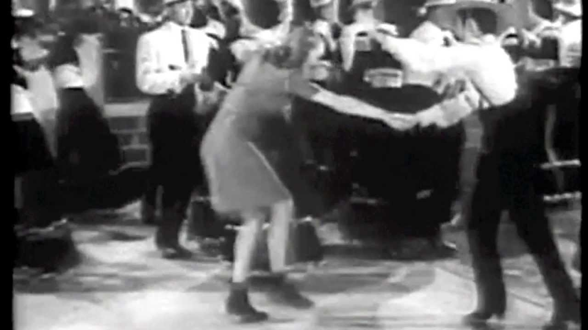

Thrift Shop

Thrift Shop est une chanson du rappeur américain Macklemore et du producteur Ryan Lewis, avec la voix du chanteur Wanz. Elle est publiée le 28 août 2012 en tant que cinquième et dernier single extrait de son deuxième album The Heist. Le single sort sous le label indépendant de Macklemore. La chanson raconte l'intérêt de Macklemore pour l'achat de vêtements bon marché, pendant que le dédain de marques de créateur et des tendances populaires bat son plein. Il prétend aimer revêtir « les vêtements de votre grand-père » parce que « c'était à 99 cents ».